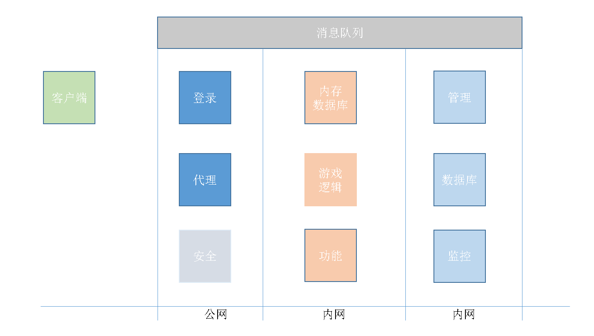

主页 下载 文档 截图 网站链接 关
于
这是什么？
这是一个MMORPG游戏服务器系统框架，提供快速开发网络游戏的基础和需要的工具集。
注意：采用帧同步的游戏，另外参考。
特性
- 集群
- 易二次开发
- 热升级
- 支持Windows/Linux等主流平台
- 提供Lua，JavaScript，MySQL连接等基础插件
- 提供Unity3D，UE4，cocos2d-x网络层插件
- 可选SSL通讯加密
- 支持IPv4/IPv6
系统架构图

- 登录
- 代理
- 游戏逻辑
- 功能
- 管理
- 数据库
- 监控
- 消息队列
接口协议
- 不同游戏基本上会用到的协议部分采用XML格式来实现，方便不同产品兼容和扩展。
- 服务器之间消息队列交换采用 Multipurpose Internet Mail Extensions (MIME)
电子邮件标准来进行。
二次开发
工具集
常见问题